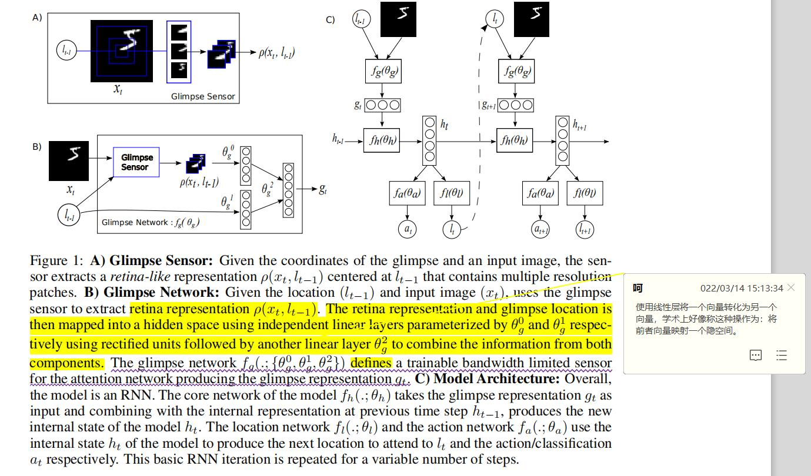
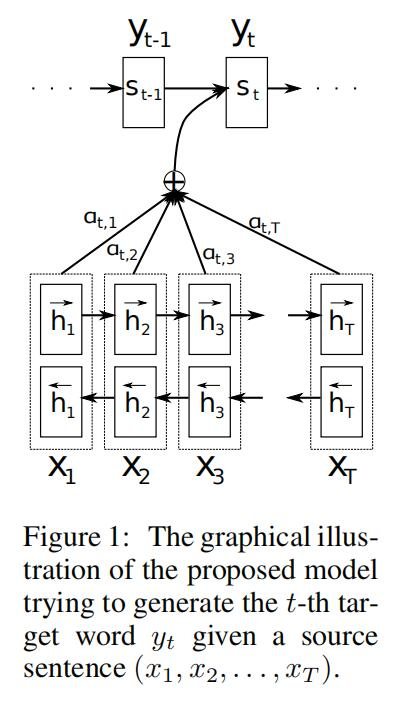

Recurrent Models of Visual Attention
(2014)
摘要
本文致力于解决什么问题：
卷积神经网络需要大量计算资源，其计算规模与图像像素的数量呈现线性关系。
本文提出的办法：
本文提出了一种新的循环神经网络模型，其能够从输入图像中适应性选择的一系列区域和位置中提取信息和特征。与卷积神经网络相同，该模型具备一定程度的内置平移不变性，但是，该模型所需要的计算量独立于输入图像尺寸。因为该模型不可微，故本文选择使用强化学习来学习特定任务策略。
本文提出方法的效果如何：
其在几个图像分类任务中效果超过了卷积神经网络基本骨架。
######################################
在欧几里得几何中，平移是一种几何变换，表示把一幅图像或一个空间中的每一个点在相同方向移动相同距离。比如对图像分类任务来说，图像中的目标不管被移动到图片的哪个位置，得到的结果（标签）应该是相同的，这就是卷积神经网络中的平移不变性。
平移不变性意味着系统产生完全相同的响应（输出），不管它的输入是如何平移的 。、
平移同变性（translation equivariance）意味着系统在不同位置的工作原理相同，但它的响应随着目标位置的变化而变化 。比如，实例分割任务，就需要平移同变性，目标如果被平移了，那么输出的实例掩码也应该相应地变化。
######################################
1 Introduction
神经网络架构在图像分类和目标检测任务中表现优越，但其在训练和测试时需要大量的计算资源。
人类感知的一个重要属性在于，其不会一次处理整个场景。相反，人类会选择性地将注意力集中到视觉空间中的部分区域，随着时间推移，将不同视角的信息组合起来以构造整个场景的内部表示，并以此来引导未来视线移动和决策。将计算资源集中到部分场景的做法节约了“带宽”，因为只需要处理更少的像素。
在本文中，以此人类感知属性为灵感，其提出了一种基于注意力的，任务驱动的，使用神经网络进行视觉处理的新式架构。
本模型是一个循环神经网络，其按序列处理输入，每次关注图像的不同区域，然后逐步组合这些不同视角的信息，以构造场景和环境的动态内部呈现。在每一步，模型都基于过去的信息和任务需求选择下一个关注的位置。本模型的参数量和计算量都可控，独立于图像尺寸。本方法使用反向回归训练神经网络组件，根据任务的使用策略梯度处理不可微部分组件。
3 The Recurrent Attention Model (RAM)
在本文中，作者将注意力问题视为一个目标导向的代理与视觉环境交互过程中的序列化决策处理问题。
在每个时间点，代理通过一个带宽受限的感知器观察环境，其只能提取局部区域的特征信息，但是代理可以主动的控制如何分配部署其感官资源，代理也可以通过执行操作来影响环境的真实状态。既然代理只能够部分观察环境，则，其需要随时间整合信息以决定如何行动，如何更有效地部署其感官资源。
在每一步，代理获得一个标量奖励，代理的目标是去最大化奖励之和。
3.1 Model
Sensor: 在每个时间步t，代理获取对环境的部分观察${X_t}$. 代理并没有完全访问整个图片，而是通过带宽受限的感知器$\rho$来从$X_t$提取信息。
在本文中，其认为带宽受限的感知器根据位置$l_{t-1}$从$X_t$中提取了类视网膜表示$\rho(x_t,l_{t-1})$，其将位置$l$附近的区域以高分辨率编码，远离$l$的地方逐步降低分辨率，以此方式生产一个比原始图像维度更低的向量。其将这个低分辨率的 表示(represention) 成为一个glimpse。其在glimpse network中运用glimpse感知器，生成glimpse feature vector $g_t=f_g(x_t,l_{t-1};\theta_g)$，其中$\theta_g={\theta_g^0,\theta_g^1,\theta_g^2}$。
**Internal state:**代理维护了一个内部状态，其总结了历史观察中提取的信息。该内部状态将与环境相关的知识进行编码，以此来决策如何部署感知器。这个内部状态是由循环神经网络的的隐藏节点$h_t$来构造的，且其随时间通过core network更新：$h_t = f_h(h_{t-1},g_t,\theta_t)$。网络的外部输入就是glimpse feature vector $g_t$。
Actions：在每个时间步，代理进行两项操作：决定如何通过感官控制$l_t$来部署感知器（定位操作）；环境操作$a_t$，其能够影响环境。在本文中，定位操作是从时刻t时的位置网络$f_l(h_t;\theta_l)$参数化的概率分布中随机选择的。
Reward：执行操作后，代理获得环境的新的视觉观察$x_{t+1}$和一个奖励信号$r_{t+1}$，代理的目标是最大化奖励信号和：$R = \sum_{t=1}^Tr_t$。

NEURAL MACHINE TRANSLATION
BY JOINTLY LEARNING TO ALIGN AND TRANSLATE
(2016)
ABSTRACT
与传统的统计机器翻译相比，神经机器翻译旨在构造单个神经网络，其能够被联合微调以最优化翻译效果。最近神经机器翻译领域的相关模型都属于编码器-解码器类别的方法，其将源句编码为一个固定长度的向量，然后解码器生成翻译。
在本文中，我们推测：使用这样的固定维度的向量的是改善编码器解码器表现的瓶颈所在。我们提出改善这一缺陷：允许模型自动（软）搜索源句哪些部分与预测一个目标词相关。
在英法翻译任务上，我们实现了与现有的最先进的短语翻译系统相当的翻译性能。
1 INTRODUCTION
神经机器翻译尝试去构造并训练单个大型神经网络，其能够读取句子并输出一个正确的翻译。
大多数提出的神经机器翻译模型属于编码器-解码器方法类，一个编码器神经网络将一个源句子读取并编码为一个固定长度的向量。然后，一个解码器根据所编码的向量中输出一个翻译。
整个编码器-解码器系统由编码器和解码器组成，经过联合训练，使给定源句时正确翻译的概率最大化。
这种编码-解码器方法的一个潜在问题是，神经网络需要能够将源句子的所有必要信息压缩成一个固定长度的向量。这可能会使神经网络难以处理长句子，特别是那些比训练语料库中的句子更长的句子。
为了解决这个问题，我们引入了一个编码-解码器模型的扩展，它能够学习联合对齐和翻译。
在每个时间步，所提模型会生成翻译的一个单词，它能够在源句中（软）搜索出最相关信息集中的位置集合。该模型然后基于（1）上述信息集中的源位置集合所对应的上下文向量和（2）所有已经生成的目标词汇 来预测下一个目标词汇。
这种方法与基本的编码器-解码器最重要的区别特征是，它不尝试将整个输入句子编码成一个固定长度的向量。相反，它是将输入句子编码为一个向量序列，并在解码时自适应地选择这些向量的一个子集。这使得神经翻译模型不必将源句子的所有信息，无论其长度如何，压缩成一个固定长度的向量。
在本文中，我们证明了所提出的联合学习对齐和翻译的方法比基本的编译码器方法具有显著提高的翻译性能。
2 BACKGROUND: NEURAL MACHINE TRANSLATION
从概率的角度来讲，翻译等价于：寻找一个目标句子$y$，使其能够最大化在给定源句$x$前提下，$y$的条件概率，如 $argmax_yp(y|x)$。
——————————————————————
argmax是一种函数，是对函数求参数(集合)的函数。当我们有另一个函数y=f(x)时，若有结果x0= argmax(f(x))，则表示当函数f(x)取x=x0的时候，得到f(x)取值范围的最大值；若有多个点使得f(x)取得相同的最大值，那么argmax(f(x))的结果就是一个点集。换句话说，argmax(f(x))是使得 f(x)取得最大值所对应的变量点x(或x的集合)。arg即argument，此处意为“自变量”。
此处，p(y|x)可以视为函数f(y)？p输出概率值是模型输出，则y是argument参数？x因为是给定的，所以视为常量？
——————————————————————
在神经机器翻译中，我们使用并行训练语料库拟合一个参数化模型来最大化 句子对 的条件概率。
一旦通过翻译模型学习了条件分布，给定一个源句，就可以通过搜索使条件概率最大化的句子，来生成相应的翻译。
2.1 RNN ENCODER–DECODER
在这里，我们简要地描述了底层的框架，称为RNN编码器-解码器。
在编码器-解码器框架中，编码器将输入的句子，一个向量序列$x = (x_1,\cdots,x_{T_x})$读成一个向量$c$。最常见的方法是使用RNN，如：
$$ht=f(x_t,h_{t-1})$$
$$c = q({h_1,\cdots,h_{T_x}})$$，
其中$h_t\in R^n$,是时刻t的隐藏状态，$c$是隐藏状态序列所生成的向量，$f$和$q$是一些非线性函数。如可以使用LSTM作为$f$，使$q({h1,\cdots,h_T})=h_T$。
解码器通常是，在给定上下文向量$c$和所有之前预测的词${y_1,\cdots,y_{t’-1}}$条件下，训练去预测下一个单词$y_{t’}$。换句话说，解码器定义 $y$ 的概率为：将联合概率分解为有序条件概率：
$$p(y)=\prod_{t=1}^Tp(y_t|{y_1,\cdots,y_{t-1},c})$$
其中$y=(y_1,\cdots,y_{T_y})$。
每一个条件概率 模型化 为：$p(y_t|{y_1,\cdots,y_{t-1},c})=g(y_{t-1},s_t,c)$，其中$g$是一个非线性的，可能多层的函数，其输出$y_t$的概率，并且$s_t$是RNN的隐藏状态。
3 LEARNING TO ALIGN AND TRANSLATE
在本部分，我们提出了一个新式的神经机器翻译架构。
该新架构包括一个双向RNN作为编码器，一个在解码翻译过程中模拟搜索源句的解码器。

3.1 DECODER: GENERAL DESCRIPTION
我们定义条件概率为：$p(y_i|y_1,\cdots,y_{i-1},x)=g(y_{i-1},s_i,c_i)$，其中$s_i$是RNN网络在时刻$i$的隐藏状态，计算为：$s_i=f(s_{i-1},y_{i-1},c_i)$。
需要注意，不同于编码器-解码器方法，在这里，对于每一个目标词$y_i$,其条件概率都是基于不同的上下文向量$c_i$。
上下文向量$c_i$依赖于一系列注解$(h_1,\cdots,h_T)$（其实就是编码器的各个隐状态）（或者说是编码器将输入语句的映射结果），每一个注解$h_i$都包含了整个输入语句的信息，但是其特别关注输入语句中第$i$个词周围的部分。（双向网络作为编码器，所以其隐状态包含了前后的信息）
上下文向量$c_i$计算为这些注解的加权和：$c_i=\sum_{j=1}^{T_x}\alpha_{ij}h_j$。
其中，每个注解$h_j$的权重$\alpha_{ij}$计算为：
$$\alpha_{ij}=\frac{exp(e_{ij})}{\sum_{k=1}^{T_x}exp(e_{ik})}\qquad(softmax)$$
其中$e_{ij}=a(s_{i-1},h_j)$是一个对齐模型（alignment model），其对位置$j$周围的输入和位置$i$周围的输出的匹配程度评分。
上述得分是基于RNN网络的隐藏状态$s_{i-1}$和输入语句的第$j$个隐状态$h_j$。
我们使用一个前馈神经网络参数化对齐模型$a$，其可以与整个系统的其他组件联合训练。将对齐模型直接计算为软对齐，这样允许代价函数的梯度反向传播，则其可以同时训练对齐模型和整个翻译模型。
————————————————————
注意力机制可分为软和硬两类：
软性注意力（Soft Attention）机制是指在选择信息的时候，不是从N个信息中只选择1个，而是计算N个输入信息的加权平均，再输入到神经网络中计算。
相对的，硬性注意力（Hard Attention）就是指选择输入序列某一个位置上的信息，比如随机选择一个信息或者选择概率最高的信息。但一般还是用软性注意力机制来处理神经网络的问题。
注意，选取概率最高这一步骤通常是不可微的，因此，硬注意力更难训练。可以借助如强化学习的手段去学习。
————————————————————
将$\alpha_{ij}$理解为目标词$y_i$对齐到（翻译自）源词$x_j$的概率。第$i$个上下文向量$c_i$则是基于概率$\alpha_{ij}$的所有注解中的期望注解。
概率$\alpha_{ij}$，或者与其相联系的能量$e_{ij}$。反应了注解$h_j$在决定下一个状态$s_i$和生成$y_i$过程中，其关于之前的隐状态$s_{i-1}$的重要性。
直观上，这实现了一种解码器中的注意力机制。
解码器决定其需要关注源句中的哪些部分。
通过让解码器拥有注意力机制，我们使得编码器不必将所有源句信息编码到一个固定维度的向量中。通过这种方法，信息可以通过注解传播，解码器因此可以相应选择性检索相关注解。
3.2 ENCODER: BIDIRECTIONAL RNN FOR ANNOTATING SEQUENCES
通常描述的RNN，其有序读取输入序列x从第一个符号$x_1$到最后一个$x_{T_x}$。然而，在本文提出的方案中，我们希望每个单词的注解（隐状态）不仅总结了之前的单词信息，同时也总结了其之后的单词信息，因此我们使用了双向RNN（bidirectional RNN —BiRNN）。
BiRNN包含前向RNN和反向RNN。前向RNN网络$\vec{f}$有序读取输入序列并计算前向隐状态$(\vec{h_1},\cdots,\vec{h_{T_x}})$。反向RNN网络$\overleftarrow{f}$按反序读取序列，生成一个反向隐状态序列$( \overleftarrow{h_1},\cdots, \overleftarrow{h_{T_x}})$。
我们获取每个单词$x_j$的注解通过拼接前向隐状态$\vec{h_j}$和反向隐状态$ \overleftarrow{h_j}$。
通过这种方式，注解$h_j$就同时总结了之前和之后的词的信息。
由于RNN网络趋向于更好的表示近处的词，注解$h_j$将会关注$x_j$周围的信息。
这个注解的序列将会被解码器和对齐网络使用来计算上下文向量。